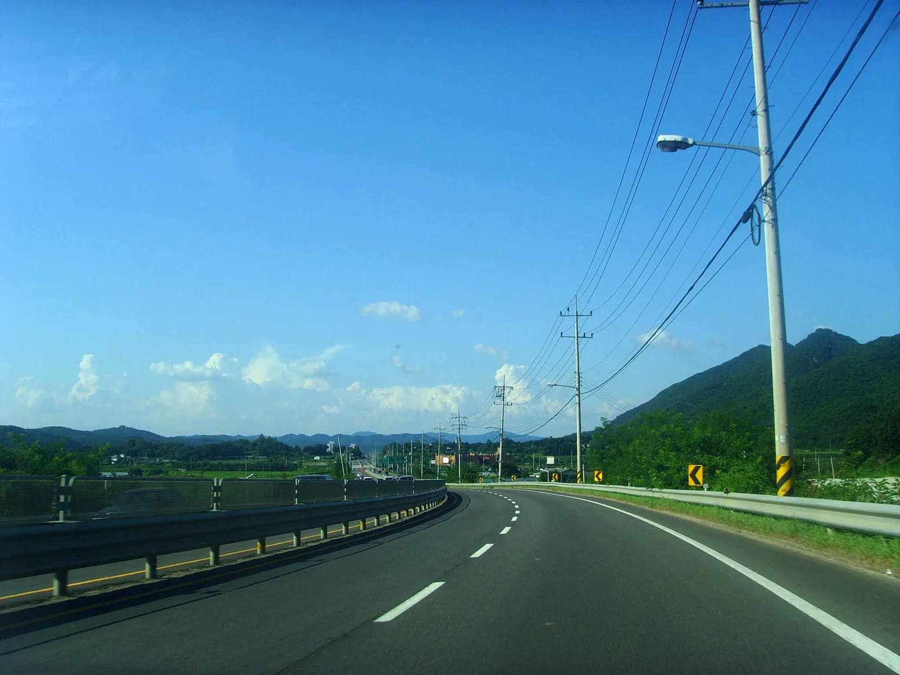
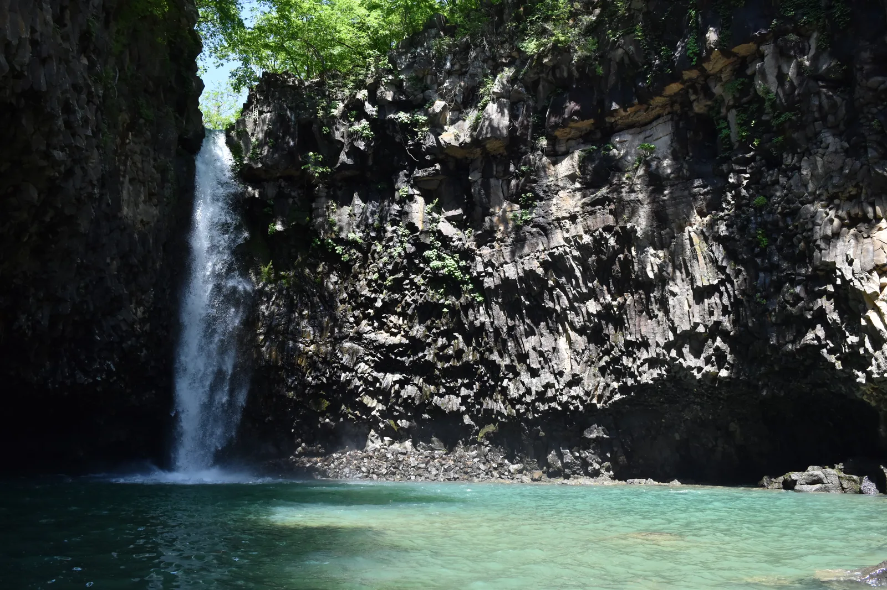
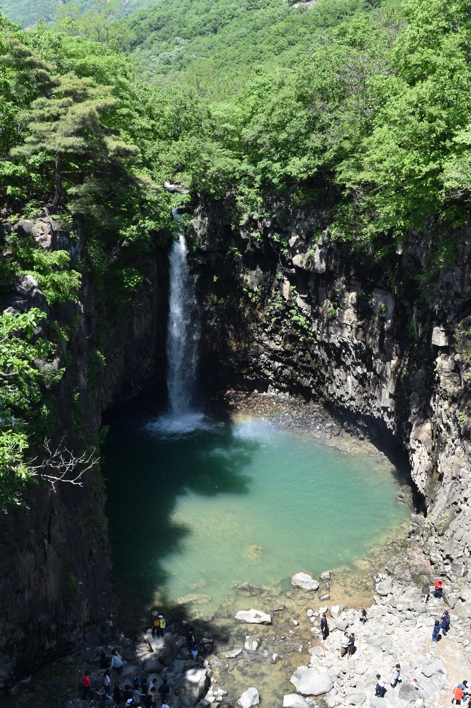
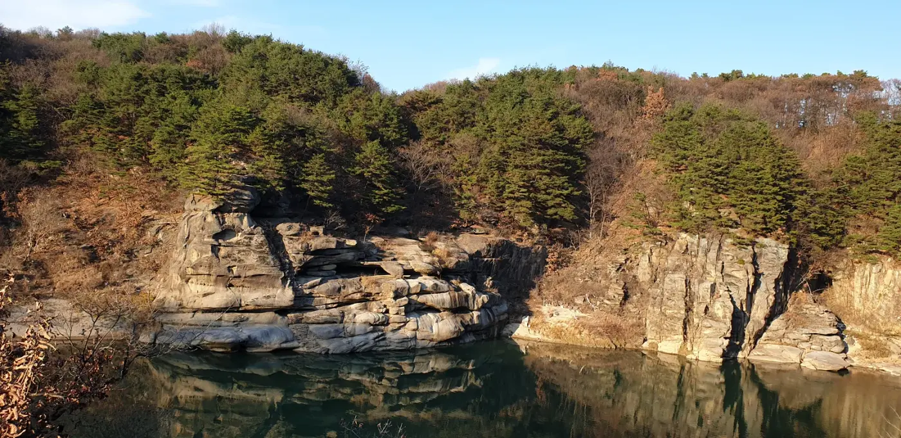
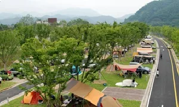
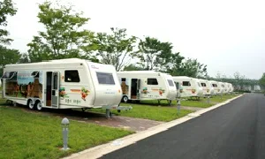
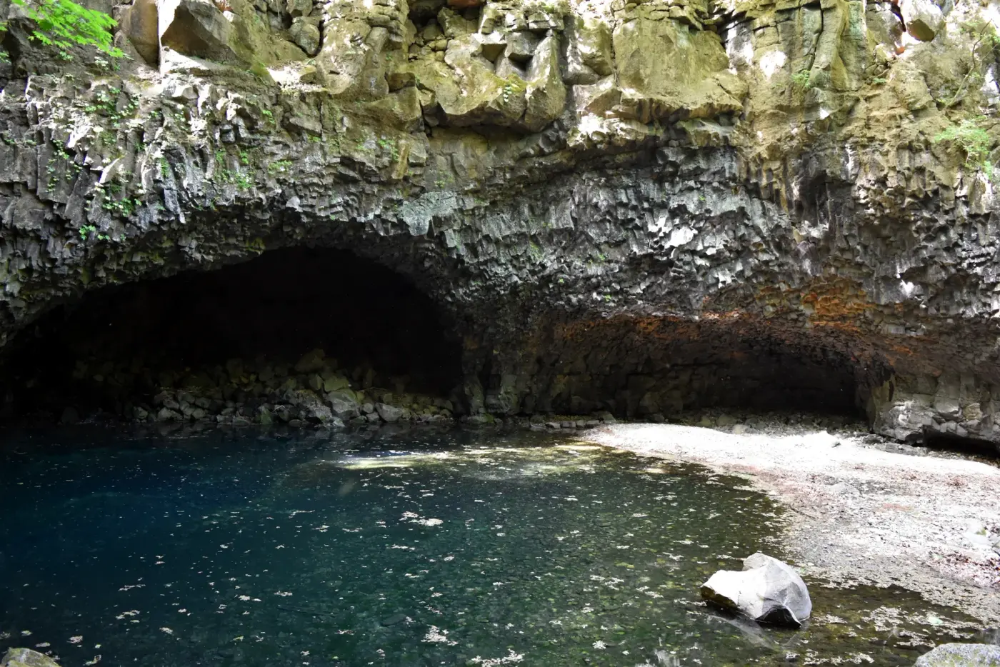
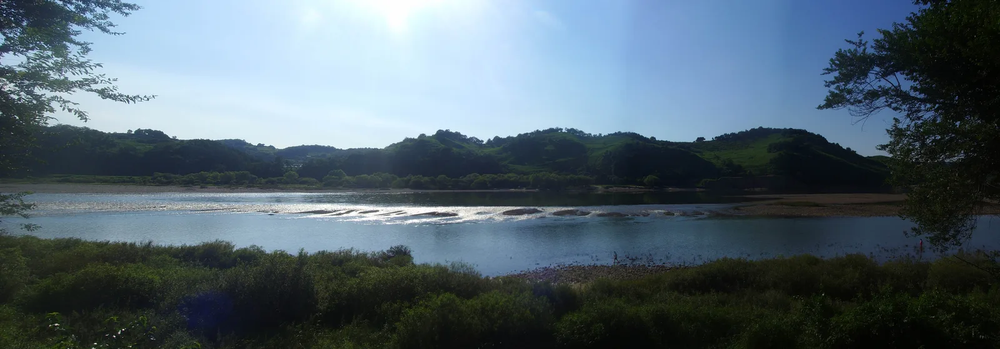

▲ 경기 연천 재인폭포. 신생대 제4기 용암이 굳어 만든 현무암 절벽을 따라 물줄기가 18m 아래 소(沼)로 떨어진다 사진=Wikimedia Commons (Jjw, CC BY-SA 4.0)
1. 왜 유네스코가 이 폭포를 주목했나
경기 연천군 연천읍 부곡리에 있는 재인폭포는 높이 약 18m의 현무암 주상절리 절벽을 타고 물이 떨어지는 폭포다. 신생대 제4기(약 54만~12만 년 전)에 북한 강원도 평강 일대에서 분출한 용암이 옛 한탄강 물길을 따라 흘러내려 굳으면서 두꺼운 현무암 대지를 만들었고, 이후 오랜 세월 강물이 이 용암 대지를 깎아내리면서 지금의 협곡과 폭포가 생겼다. 절벽에는 주상절리뿐 아니라 하식동굴, 포트홀(돌개구멍), 가스튜브 흔적까지 남아 있어 지질학적 가치가 크다는 것이 한탄강세계지질공원 측 설명이다. 이런 가치를 인정받아 재인폭포 일대를 포함한 한탄강 유역은 2020년 국내 네 번째이자 국내 최초로 '강'을 중심으로 구성된 유네스코 세계지질공원으로 지정됐다. 연천군·포천시·철원군이 공동 관할하며, 전체 26개 지질명소 중 10개가 연천군에 있다. 재인폭포는 그 이전에도 경관이 뛰어나 국가유산(명승)으로 지정돼 있던 곳이다.

▲ 재인폭포 옆 협곡 절벽의 주상절리를 가까이서 본 모습. 신생대 용암이 굳으며 만들어진 세로줄 무늬가 뚜렷하다 사진=Wikimedia Commons (Jjw, CC BY-SA 4.0)
2. 자가용으로 가는 길과 주차
수도권에서 자가용으로 갈 경우 3번국도(자유로·통일로 방면)를 타고 전곡읍내를 지난 뒤 연천 방향으로 약 6km 직진, 통현삼거리에서 우회전하면 재인폭포 주차장에 닿는다. 서울 강북권 기준 편도 1시간 30분~2시간 안팎이 걸려 당일치기 드라이브 코스로 적당하다. 정확한 소요 시간은 출발지와 도로 상황에 따라 달라지므로 내비게이션으로 '재인폭포' 또는 '재인폭포주차장'을 검색해 확인하는 것이 좋다.

▲ 연천 인근을 지나는 3번국도. 전곡읍내를 지나 연천 방면으로 이동하면 재인폭포 주차장에 닿는다 사진=Wikimedia Commons (G43, CC BY-SA 3.0)
재인폭포는 2025년 9월 26일부터 유료 관람으로 전환됐다. 매표소에서 입장료(성인 5,000원, 어린이·청소년 7~18세는 50% 감면, 6세 이하 무료)를 내고 들어가면, 낸 입장료 중 3,000원(감면 대상 2,000원)은 연천사랑상품권으로 되돌려주는 방식이어서 실질 부담은 이보다 낮다. 운영시간은 오전 9시부터 오후 6시까지이며 입장·매표는 오후 5시에 마감된다. 매표소를 지나면 도보 또는 전기셔틀버스로 폭포 전망대까지 이동할 수 있다. 전기셔틀버스는 입구→폭포 방향 첫차 오전 9시 30분~막차 오후 4시 50분, 폭포→입구 방향 첫차 오전 9시 50분~막차 오후 5시 20분으로 약 20분 간격 운행하며(셔틀 매표는 오후 4시 30분 마감), 안전·기상 여건에 따라 운행이 변경되거나 중단될 수 있다는 것이 공식 안내다. 도보로는 매표소에서 전망대까지 약 1.2km 거리로, 완만한 산책로를 따라 20~30분 정도 걸린다. 요금·운영시간은 계절과 상황에 따라 바뀔 수 있으므로 방문 전 연천군청 관광과(031-839-2061·2147)나 연천군시설관리공단(031-834-3770)에 확인하는 것을 권한다. 주말·단풍철에는 주차장이 혼잡할 수 있어 오전 이른 시간 도착이 유리하다.
3. 스카이워크 전망대와 출렁다리 — 둘러보는 동선
매표소에서 셔틀이나 도보로 이동하면 먼저 재인폭포 출렁다리를 만난다. 협곡 양쪽 절벽을 잇는 다리로, 다리 위에 서면 폭포 전경을 정면으로 마주하고 발아래로는 주상절리 협곡이 아득하게 내려다보인다. 산책로 끝에는 스카이워크 전망대가 있어 협곡과 폭포를 한층 넓은 시야로 볼 수 있다. 전망대에서 계단을 따라 폭포 바로 앞 소(沼)까지 내려갈 수도 있는데, 계단이 가파른 구간이 있어 발을 헛디디지 않도록 주의가 필요하다는 것이 연천군청의 공식 안내다. 협곡 지형 특성상 우천 시나 결빙기에는 바닥이 미끄러워질 수 있으므로 등산화나 미끄럼 방지가 되는 신발을 신는 것이 안전하다.

▲ 재인폭포를 가까이서 본 모습. 절벽에 새겨진 세로줄 무늬가 주상절리다 사진=Wikimedia Commons (Jjw, CC BY-SA 4.0)

▲ 전망대에서 내려다본 재인폭포. 계단을 따라 내려가면 사진 아래쪽처럼 소(沼) 바로 앞까지 다가갈 수 있다 사진=Wikimedia Commons (Jjw, CC BY-SA 4.0)
폭포 주변은 천연기념물 어름치와 멸종위기종 분홍장구채의 서식지이기도 해, 정해진 탐방로를 벗어나지 않는 것이 좋다. 앞서 밝힌 대로 전기셔틀버스와 탐방로 운영은 안전·기상 여건에 따라 변경되거나 일시 중단될 수 있다는 것이 공식 안내이며, 낙석이나 절벽 접근에 대한 별도의 통제가 있는지는 방문 시점의 현장 안내판이나 연천군시설관리공단 공식 채널을 통해 확인하는 것이 확실하다.
4. 가을에 가면 다른 이유
재인폭포 일대는 협곡을 따라 활엽수가 우거져 있어, 가을이면 절벽과 소(沼) 주변이 단풍으로 물든다. 물줄기가 상대적으로 잦아드는 가을·겨울에는 현무암 절벽의 결과 주상절리 무늬가 여름철보다 또렷하게 드러나는 편이다. 다만 강수량이 적은 시기에는 폭포 수량이 줄어들 수 있으므로, 풍부한 물줄기를 보고 싶다면 비가 온 직후를 노리는 것도 방법이다. 협곡이 그늘지는 오전보다는 해가 높이 뜬 낮 시간대에 방문해야 절벽과 물빛이 선명하게 보인다.

▲ 가을 단풍이 물든 한탄강 협곡. 재인폭포가 속한 한탄강 유역은 협곡을 따라 이런 풍경이 이어진다 사진=Wikimedia Commons (용인 학생, CC BY-SA 4.0)
📍 방문 전 확인할 것
협곡 지형 특성상 우천 시 안개나 물안개가 짙어질 수 있고, 폭우·태풍 등 기상 상황에 따라 탐방로나 출렁다리 이용이 일시 제한될 가능성이 있다. 방문 당일 기상 특보가 있다면 연천군청 관광과나 현지 안내소에 사전 확인하는 것이 안전하다.
5. 폭포 옆 캠핑, 그리고 한탄강 지질공원의 다른 얼굴
재인폭포 주차장 인근에는 오토캠핑장이 함께 조성돼 있다. 텐트를 칠 수 있는 사이트와 카라반이 함께 운영되며, 자가용으로 폭포를 둘러본 뒤 바로 하룻밤 묵어가는 코스로도 쓰인다. 이용료나 예약 방법은 계절에 따라 바뀔 수 있어 예약 전 공식 채널 확인이 필요하다.

▲ 재인폭포 인근 오토캠핑장 전경. 자가용으로 폭포를 둘러본 뒤 야영까지 이어가는 방문객도 많다 사진=Wikimedia Commons (hantan.co.kr, CC BY-SA 4.0)

▲ 오토캠핑장 내 카라반 구역. 텐트 없이도 야영을 즐길 수 있다 사진=Wikimedia Commons (hantan.co.kr, CC BY-SA 4.0)
재인폭포는 한탄강 유네스코 세계지질공원을 이루는 26개 지질명소 중 하나일 뿐이다. 차로 강 하류(포천 방향)로 이동하면 천연기념물로 지정된 포천 비둘기낭폭포처럼 현무암 협곡과 하식동굴이 어우러진 다른 지질명소를 만날 수 있고, 상류(철원 방향)로는 승일교·직탕폭포와 주상절리 잔도길이 있는 고석정 일대로 이어진다. 연천 내에서는 임진강·한탄강이 만든 절벽 지형인 좌상바위, 구석기 유적이 발굴된 전곡리 유적(전곡선사박물관)도 함께 묶을 수 있는 코스다. 카프리즘이 이전에 다룬 철원 고석정 꽃밭 기사와 연천 호로고루 기사도 참고할 만하다.

▲ [참고 사진] 포천 비둘기낭폭포의 현무암 하식동굴. 재인폭포가 아닌 인근 지질명소로, 한탄강 유네스코 세계지질공원에 함께 속해 있다 사진=Wikimedia Commons (Jjw, CC BY-SA 3.0)
6. 생물권보전지역이기도 한 한탄·임진강 유역
재인폭포가 속한 한탄강·임진강 유역은 지질공원 지정에 앞서 유네스코 생물권보전지역으로도 등재된 곳이다. 협곡과 하천이 만든 서식 환경 덕분에 천연기념물 어름치, 멸종위기종 분홍장구채 등 희귀 동식물이 함께 살고 있어, 지질 경관과 생태 가치를 동시에 지닌 지역으로 꼽힌다. 드라이브 코스로 강줄기를 따라가다 보면 협곡 주변으로 넓게 펼쳐진 하천 풍경도 함께 감상할 수 있다.

▲ 임진강 유역의 여름 풍경. 한탄강과 함께 연천임진강 생물권보전지역을 이룬다 사진=Wikimedia Commons (CC BY 3.0)
7. 하루 코스로 정리하면
오전 일찍 출발해 3번국도로 재인폭포 주차장에 도착한 뒤, 매표소에서 표를 끊고 도보나 전기셔틀버스로 이동해 출렁다리와 스카이워크 전망대에서 폭포와 협곡을 감상한다. 시간이 되면 계단을 따라 폭포 바로 앞 소(沼)까지 내려가 보고, 점심 무렵 인근 오토캠핑장이나 전곡읍내에서 식사를 해결한 뒤 오후에는 차로 이동 가능한 철원 고석정이나 연천 호로고루 등 지질공원·안보관광 코스를 이어 붙이면 당일치기로도 알찬 일정이 된다.
✅ 출발 전 확인할 것
· 입장료(성인 5,000원, 상품권 3,000원 환급)와 운영시간(09:00~18:00, 매표 마감 17:00)은 방문 전 확인
· 전기셔틀버스 운행 시간·요금은 연천군시설관리공단에 사전 확인
· 계단·전망대 구간은 실족 위험이 있어 편한 신발 필수
· 우천·태풍 특보 시 탐방로·출렁다리 이용 제한 가능성 확인
· 주말·단풍철에는 주차장 혼잡 예상, 이른 오전 출발 권장
· 오토캠핑장 이용 시 예약 여부 사전 확인